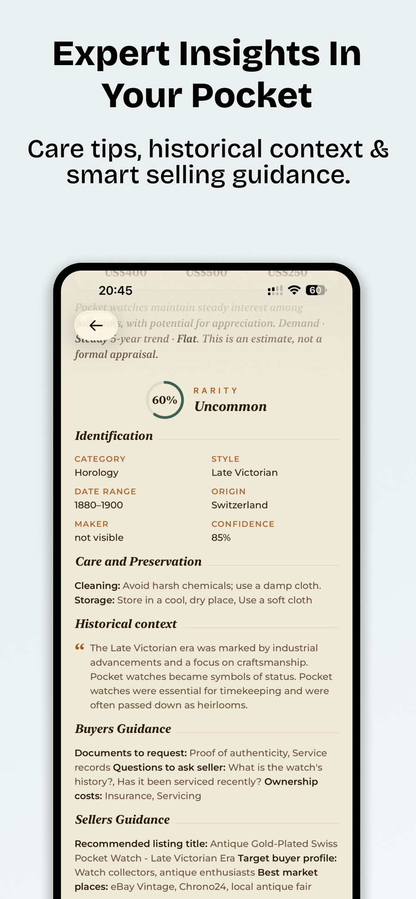

Glassware is trickier than marked ceramics because so much of it is unsigned. Instead you read the making: how it was formed, how it was decorated, its colour and its weight. These add up to an era and often a maker.
Run your fingertips over the base and edges — the feel of old glass is a clue in itself.
Check the base for a pontil mark
Hand-blown glass often has a pontil mark — a rough or polished scar on the base where the pontil rod was attached. A genuine pontil suggests older, hand-worked glass; a perfectly smooth, moulded base suggests machine production.
Pressed, cut or blown?
Cut glass has crisp, sharp facets and heavy weight; pressed glass shows mould seams and softer detail; free-blown glass has slight asymmetry and no seams. Identifying the technique narrows the age and quality bracket.
Read the colour and pattern
Specific colours and patterns belong to identifiable eras and makers — think Depression glass hues, carnival glass iridescence, or milk glass. A recognisable pattern is often enough to name the maker and date.
Look for wear and quality signs
Genuine age shows fine base wear (tiny scratches where it sat and slid), bubbles or straw marks in early glass, and a bell-like ring in fine lead crystal. Even, artificial “wear” and flawless modern clarity point to newer pieces.
Quick checklist
- Feel the base for a pontil mark
- Decide pressed, cut or blown
- Match the colour and pattern to an era
- Look for genuine base wear
- Note weight and ring for lead crystal

Do it in seconds with Curio
Unmarked glass is where an identifier really helps:
- Photograph the piece, plus the base and any pattern detail
- Curio identifies the likely era, technique and maker where possible
- Get an estimated value range and care tips for the glass
Frequently asked questions
What is a pontil mark?
It’s the scar left on the base of hand-blown glass where the pontil rod was attached. Its presence suggests older, hand-worked glass.
How can I tell cut glass from pressed glass?
Cut glass has sharp, crisp facets and extra weight; pressed glass shows mould seams and softer edges. Curio can help distinguish them from a photo.
Can antique glassware be identified without a mark?
Yes — most is unmarked. Colour, pattern, technique and pontil marks let Curio place a piece without a signature.